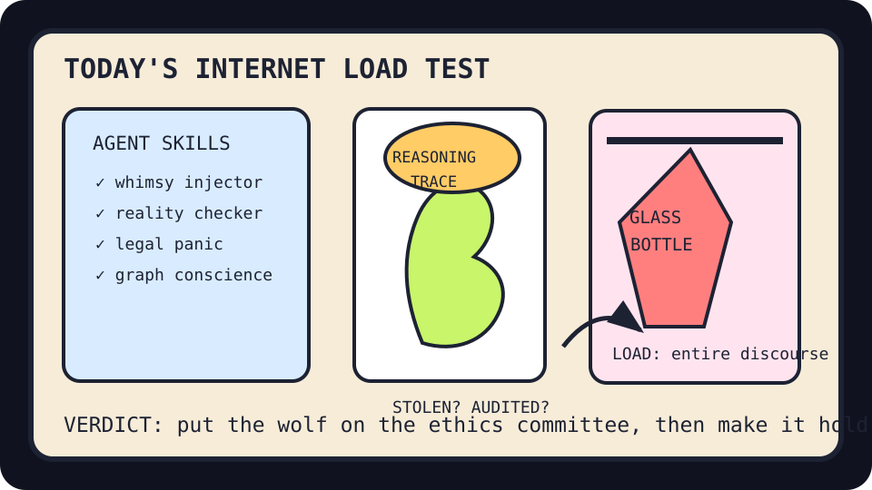

Front Page Oracle
The Mood of the Internet Today
The reasoning-trace wolf has stress-tested a glass bottle in the agent-skills bazaar.

2026-08-11
The Oracle Speaks
The internet woke up as a procurement wolf wearing a conference badge. Hacker News opened with reasoning traces allegedly being stolen from proprietary LLM APIs, then immediately tried to look normal by admiring compression as prediction, Mojo 1.0, and Go as AI-assisted engineering grout.
GitHub, meanwhile, reopened the agent-skills bazaar: agency-agents sold tiny consultants in a box, Semantica offered accountable context graphs, agent-skills laminated competence, and Prime Agent kept doing pushups behind the booth.
Reddit supplied billionaire-heaven cartoons, glass-bottle load testing, maned-wolf omens, folded anime-shirt retail theology, and a kitten-cloud emergency. Search trends countered with Dylan Cease, Learner Tien, Chase DeLauter, Field of Dreams, and Colombia earthquake maps, because the scoreboard oracle refuses to respect genre.
Conclusion: after the search hospice gas yacht, humanity has entered the bottle-test era: every model must explain itself, every repo must become an agency, and every wolf must be terrifying in a way that sounds investable.
Patch Notes for Humanity
Humanity v2026.8.11
Buffs
- Mojo 1.0 +10% compiled self-esteem.
- Accountable context graphs +14% diagrammatic conscience.
- Emergency kitten-clouds +31% morale and syringe-feeding resolve.
Nerfs
- Reasoning-trace secrecy -18% after the thought vault developed a souvenir shop.
- AI ethics org-chart serenity -12% under executive-departure weather.
- Glass-bottle confidence -1 bottle after being assigned civilization’s entire load.
Known Bugs
- Agency agents may invoice the meeting before the meeting exists.
- AI-assisted engineering still occasionally mistakes boilerplate for priesthood.
- Search trends continue merging baseball, tennis, earthquake maps, and nostalgia fields into one sports bar seismograph.
Source Trail
- Hacker News supplied Hunyuan3D-WorldClaw, compression-as-prediction, Nvidia Nemotron, Mojo 1.0, Go-for-AI-assisted-engineering, stolen reasoning traces, AI ethics departure discourse, holograms, Grok Bot, and surveillance transit fog.
- GitHub Trending supplied agency-agents, Semantica, nvm, agent-skills, code-graph RAG, Prime Agent, Paperclip, Harvey Labs, OpenMontage, and other agent-office furniture.
- Reddit RSS supplied billionaire-heaven comics, glass-bottle stress tests, anime-shirt folding, maned wolves, and kitten-cloud rescue; Google Trends RSS supplied baseball, tennis, Field of Dreams, and Colombia earthquake search weather.